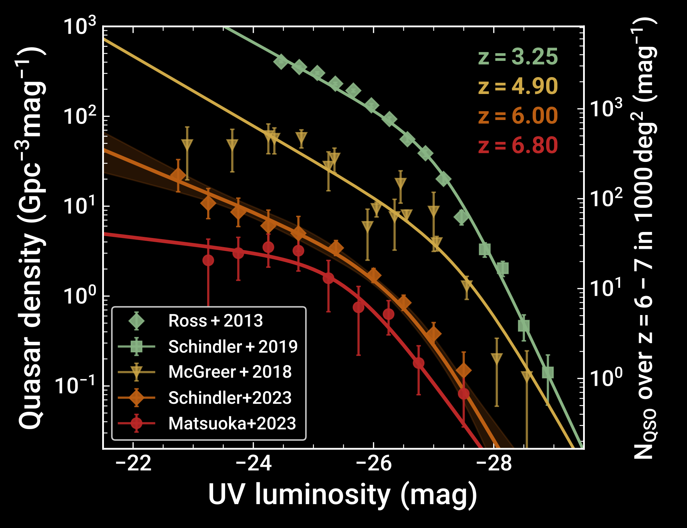
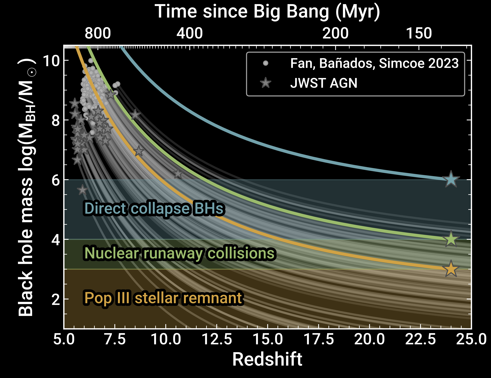
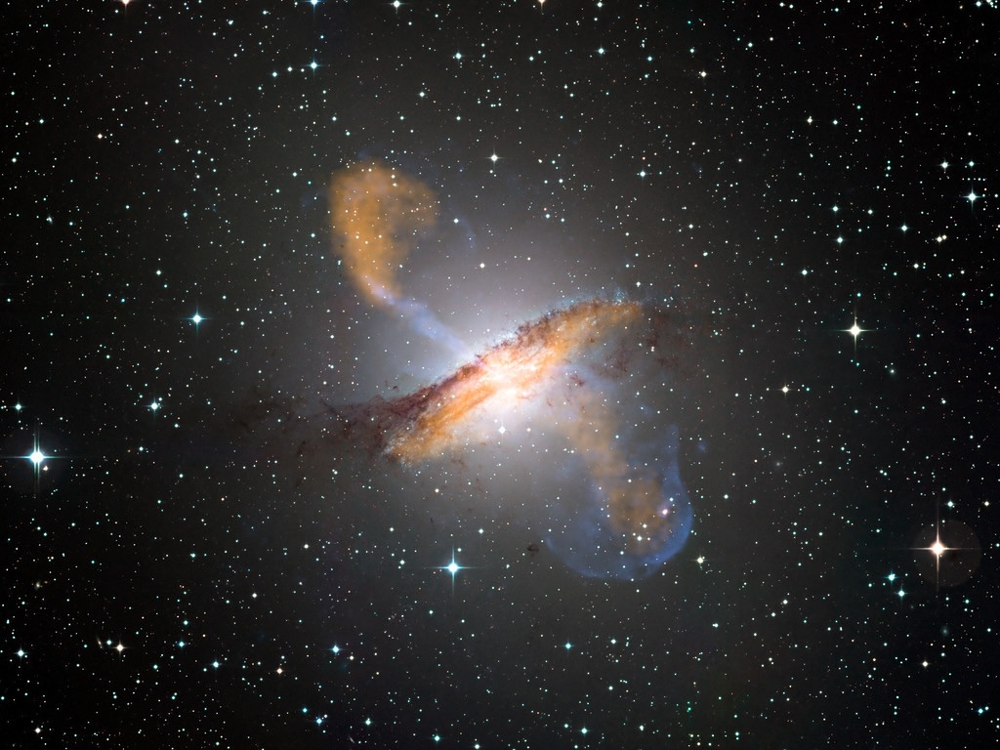
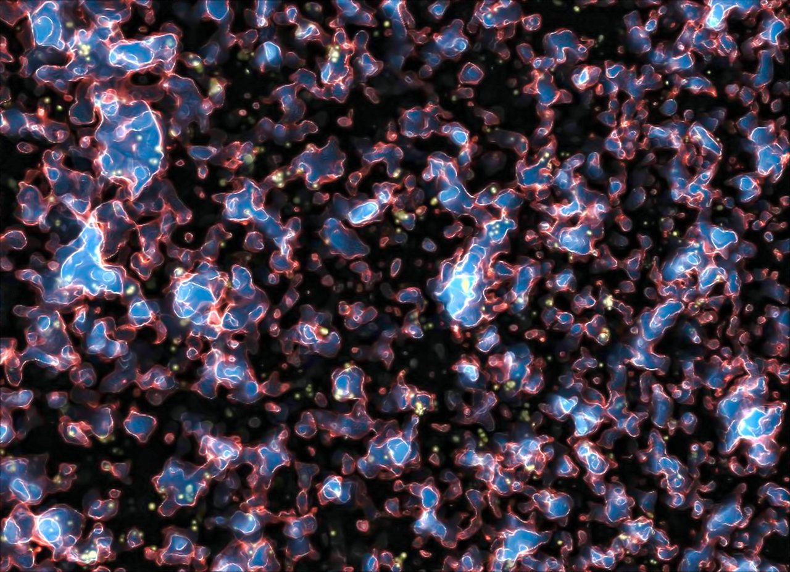

High-redshift Quasars
The rise of rapidly growing SMBHs at high redshift
Quasars, as accreting supermassive black holes, offer a rich laboratory to study the formation and growth of supermassive black holes, to chronicle hydrogen reionisation, and also pinpoint sites of massive galaxy formation in the early Universe.

Quasar Demographics
The quasar luminosity function (QLF) is the fundamental statistic to constrain the redshift evolution
of the quasar population.
It is an important demographic probe that enables comparisons with cosmological simulations and
semi-analytic models to disentangle different supermassive black hole seeding and growth scenarios.
During my PhD I have constrained the QLF at z=3-5 and determined that the bright-end slope does not flatten with redshift as previously thought, but remains steep.
More recently, I was an integral part of the Pan-STARRS1 distant quasar survey targeting quasars at z>6.
Following the discovery of 55 additional quasars, I was able to determine the most precise estimate of the z∼6 quasar luminosity function to date.
The image shows the evolution of the QLF from z∼3 to z∼6, highlighting the steep bright-end slope and the rapid decline in quasar number density with increasing redshift.
My postdoc Francesco Guarneri is now working on extending these studies to z≈6.5-8 using the new quasar discoveries in the Euclid Wide Survey
in the Data Release 1 footprint.
Quasar-galaxy clustering is a powerful tool to constrain quasar host dark matter halo masses and thus connect SMBH growth to structure formation in the early Universe. I have published the first constraints of the quasar-galaxy cross-correlation function at z≈7.3, based on the discovery of eight galaxies in two quasar fields. Our results indicate that the host dark matter halo masses of z≈7.3 quasars are still massive, but less massive than those of z∼6 quasars, providing tentative evidence for a non-monotonic redshift evolution of quasar clustering properties.
Relevant publications
- The Extremely Luminous Quasar Survey in the Sloan Digital Sky Survey Footprint. II. The North Galactic Cap Sample (Schindler et al. 2018)
- The Extremely Luminous Quasar Survey in the Sloan Digital Sky Survey Footprint. III. The South Galactic Cap Sample and the Quasar Luminosity Function at Cosmic Noon (Schindler et al. 2019a)
- The Pan-STARRS1 z > 5.6 Quasar Survey. III. The z ≈ 6 Quasar Luminosity Function (Schindler et al. 2023)
- A first look at quasar-galaxy clustering at z ≃ 7.3 (Schindler et al. 2026)

Supermassive black hole growth
The figure shows Eddington-limited growth tracks for known SMBHs at z>6.
Three regimes for different SMBH seeds are highlighted, demonstrating that
either massive seeds (from nuclear runaway collisions or direct-collapse BHs) or super-Eddington
accretion is required to explain the existence of quasars at z>6.5.
The big question is which of these scenarios is the dominant channel for the formation of SMBHs.
Measuring the masses and accretion rates of supermassive black holes in the early Universe is important
to disentangle the different scenarios for their formation and growth.
Spectroscopic observations of the rest-frame UV to optical wavelength regime are required to measure
the broad emission lines and continuum luminosities, which are used to estimate the black hole masses and accretion rates.
I have been leading one of the largest spectroscopic studies of high-redshift quasars, the X-SHOOTER/ALMA sample of quasars in the epoch of reionization.
Based on this sample of 38 reionization-era quasars, z>5.7, we concluded that quasars at these times are accreting more rapidly than their lower-redshift cousins.
My PhD student Radha Gharapurkar is now building a comparison sample to the reionization-era quasars at z∼3.5, comprised of nearly 60 of the most luminous quasars at this epoch. We aim to understand the evolution of the accretion properties in the most massive SMBHs at their respective cosmic epochs, which will provide insight into the changing conditions of accretion across cosmic time.
Relevant publications
- The X-SHOOTER/ALMA Sample of Quasars in the Epoch of Reionization. I. NIR Spectral Modeling, Iron Enrichment, and Broad Emission Line Properties (Schindler et al. 2020)
- The X-shooter/ALMA Sample of Quasars in the Epoch of Reionization. II. Black Hole Masses, Eddington Ratios, and the Formation of the First Quasars (Farina, Schindler et al. 2022)

SMBH galaxy co-evolution and quasar feedback
It is well known that the masses of supermassive black holes correlate with the mass of the central
stellar component of their host galaxies, indicating a co-evolution.
Quasar feedback is thought to be the mechanism that regulates this co-evolution.
At z>6, however, SMBHs appear to be over-massive compared to the local relation, suggesting that SMBH
growth precedes galaxy growth in the early Universe. Ideally one would like to trace
the evolution of the SMBH-galaxy relation across cosmic time.
In a pilot study I used molecular CO transitions to trace the cold gas kinematics in two z∼3.5 hyper-luminous quasars.
Using NOEMA interferometric observations, my PhD student Radha Gharapurkar is now working on a larger sample at these redshifts to fill the
gap between the reionization-era quasars and the local Universe.
Quasar spectra also offer insight into the chemical profile and gas kinematics of the accreting material. In the X-SHOOTER/ALMA sample we find that z>5.7 quasars are already enriched in iron, indicating a fast chemical evolution at the centers of these early massive galaxies. In addition, the spectra more commonly show large velocity shifts of high-ionization lines, indicative of vigorous (outflowing) gas motion close to the accretion disk. Similarly, based on the XQR-30 quasar sample at redshifts z=5.8-6.6, we find evidence for a higher incidence of fast outflowing dense gas , possibly indicating more vigorous feedback effects on the surrounding galactic gas.
Using the z=3.5 hyper-luminous quasar sample for a comparative study, my PhD student Radha Gharapurkar is now investigating whether quasar feedback at z>6 is indeed more common or a general result of the vigorous accretion in these sources.
The images on the left shows Centaurus A revealing the lobes and jets emanating from the active galaxy’s central black hole, an
example of quasar feedback in the local Universe.
Credit: ESO/WFI (Optical); MPIfR/ESO/APEX/A.Weiss et al. (Submillimetre); NASA/CXC/CfA/R.Kraft et al. (X-ray)
Relevant publications

Hydrogen Reionisation
While we believe that the Universe was fully reionised by z=5.3, the exact evolution of the
neutral hydrogen fraction, the morphology of reionisation and its dominant drivers remain uncertain.
High-redshift quasars provide sightlines to probe these properties, including the
hydrogen neutral fraction by measuring the damping wing signal imprinted on Lyman-α emission line at z>7.
Our new Euclid quasar discoveries are now providing a large sample for this experiment.
Work on the quasar luminosity function at z>5, including my own work on the Pan-STARRS1 distant quasar survey,
has shown that quasars are too rare to be the main drivers of hydrogen reionisation.
However, recent results from AGN demographics based on JWST observations seem to question this conclusion.
Using JWST/NIRCam wide-field slitless spectroscopy in the COSMOS field,
my PhD student Katharina Jurk is now working on a census of faint AGN at z>6 to determine their contribution to the ionising photon budget.
The image on the right illustrates the hydrogen reionisation of the Universe based on a representative scientific simulation (see Alvarez et al. 2009)
Credit: M. Alvarez (http://www.cita.utoronto.ca/~malvarez), R. Kaehler, and T. Abel/ESO